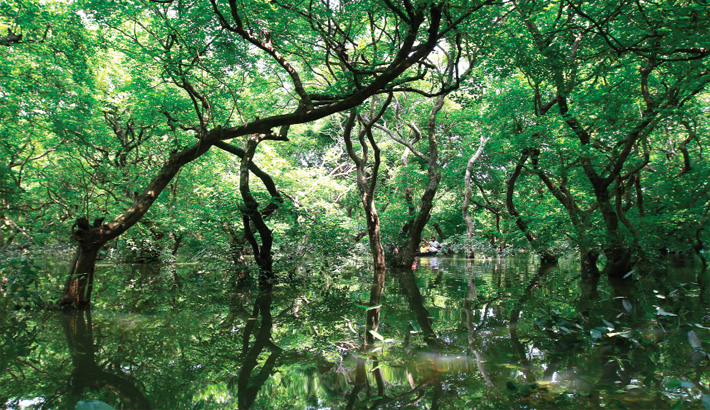

Sylhet
Author: Syed Khalid Rahman
সিলেট উত্তর-পূর্ব বাংলাদেশের একটি প্রধান শহর, একই সাথে এই শহরটি সিলেট বিভাগের বিভাগীয় শহর। এটি সিলেট জেলার অন্তর্গত। সিলেট সিটি কর্পোরেশনের আওতাধীন এলাকাই মূলত সিলেট শহর হিসেবে পরিচিত। সিলেট ২০০৯ সালের মার্চ মাসে একটি মেট্রোপলিটন শহরের মর্যাদা লাভ করে।সুরমা নদীর তীরবর্তী এই শহরটি বাংলাদেশের অন্যতম গুরুত্বপূর্ণ শহর। প্রাকৃতিক সৌন্দর্যমণ্ডিত এ শহরটি দেশের আধ্যাত্মিক রাজধানী হিসেবে খ্যাত। সিলেট অর্থনৈতিকভাবে বাংলাদেশের সবচেয়ে সমৃদ্ধ জেলা হিসেবে পরিচিত। শিল্প, প্রাকৃতিক সম্পদ ও অর্থনৈতিক ভাবে সিলেট দক্ষিণ এশিয়ার অন্যতম ধনী জেলা। এ শহরের বিশাল সংখ্যক লোক পৃথিবীর বিভিন্ন দেশে বসবাস করে প্রচুর বৈদেশিক মুদ্রা প্রেরণ করে দেশের অর্থনীতিতে বিশেষ ভূমিকা পালন করে আসছে।
সিলেটের পাথর, বালুর গুণগতমান দেশের মধ্যে শ্রেষ্ঠ। এখানকার প্রাকৃতিক গ্যাস সারা দেশের সিংহভাগ চাহিদা পূরণ করে থাকে।শাহ জালাল ও শাহ পরান-এর পবিত্র মাজার শরীফ এ শহরে অবস্থিত। প্রতি বছর বিপুল সংখ্যক ধর্মপ্রাণ লোক মাজার জিয়ারতের উদ্দেশ্যে আগমন করে। আসে বিপুল সংখ্যক পর্যটক। Song: Sylhet RatarGul

Cox Bazar Blog
Author: Syed Khalid Rahman
কক্সবাজার বাংলাদেশের দক্ষিণ-পূর্বাঞ্চলে অবস্থিত একটি শহর, মৎস্য বন্দর এবং পর্যটন কেন্দ্র। এটি চট্টগ্রাম বিভাগের কক্সবাজার জেলার সদর দপ্তর। কক্সবাজার তার নৈসর্গিক সৌন্দর্য্যের জন্য বিখ্যাত। এখানে রয়েছে বিশ্বের দীর্ঘতম অবিচ্ছিন্ন প্রাকৃতিক বালুময় সমুদ্র সৈকত, যা ১২০ কি.মি. পর্যন্ত বিস্তৃত। এখানে রয়েছে বাংলাদেশের বৃহত্তম সামুদ্রিক মৎস্য বন্দর এবং সাবমেরিন ক্যাবল ল্যান্ডিং স্টেশন। একসময় কক্সবাজার প্যানোয়া নামেও পরিচিত ছিল যার আক্ষরিক অর্থ হচ্ছে হলুদ ফুল। এর আরও একটি প্রাচীন নাম হচ্ছে পালঙ্কি।কক্সবাজার নামটি এসেছে ক্যাপ্টেন হিরাম কক্স নামে ব্রিটিশ ইস্ট ইন্ডিয়া কোম্পানির এক অফিসারের নাম থেকে। কক্সবাজারের আগের নাম ছিল পালংকি। ব্রিটিশ ইস্ট ইন্ডিয়া কোম্পানি অধ্যাদেশ, ১৭৭৩ জারি হওয়ার পর ওয়ারেন্ট হোস্টিং বাংলার গভর্নর হিসেবে নিয়োগ প্রাপ্ত হন। তখন হিরাম কক্স পালংকির মহাপরিচালক নিযুক্ত হন। ক্যাপ্টেন কক্স আরাকান শরণার্থী এবং স্থানীয় রাখাইনদের মধ্যে বিদ্যমান হাজার বছরের পুরোনো সংঘাত নিরসনের চেষ্টা করেন Song: Cox Bazar most Viral Song

St. Martin's Island Blog
Author: Syed Khalid Rahman
সেন্ট মার্টিন দ্বীপ বাংলাদেশের সর্ব দক্ষিণে বঙ্গোপসাগরের উত্তর-পূর্বাংশে অবস্থিত একটি ছোট প্রবাল দ্বীপ (মাত্র ৮ বর্গকিলোমিটার)। এটি কক্সবাজার জেলার টেকনাফ হতে প্রায় ৯ কিলোমিটার দক্ষিণে ও মায়ানমার-এর উপকূল হতে ৮ কিলোমিটার পশ্চিমে নাফ নদীর মোহনায় অবস্থিত। প্রচুর নারিকেল পাওয়া যায় বলে স্থানীয়ভাবে একে নারিকেল জিঞ্জিরাও বলা হয়ে থাকে। বাংলাদেশের সমুদ্রপ্রেমীদের কাছে এটি ব্যাপক পরিচিত একটি নাম। বিখ্যাত লেখক, কথাসাহিত্যিক হুমায়ূন আহমেদের দারুচিনি দ্বীপ নামের পূর্ণদৈর্ঘ্য ছায়াছবি দ্বারা এই দ্বীপটির পরিচিতি আরো বেড়ে যায়। জানুয়ারি, ২০২২ তারিখে বন্যপ্রাণী (সংরক্ষণ ও নিরাপত্তা) আইন ২০১২ অনুযায়ী সেন্টমার্টিন দ্বীপ সংলগ্ন বঙ্গোপসাগরের ১,৭৪৩ বর্গ কি.মি. এলাকাকে সামুদ্রিক সংরক্ষিত এলাকা হিসেবে ঘোষণা করে পরিবেশ মন্ত্রণালয়।Song: St. Martin's Island Boat View